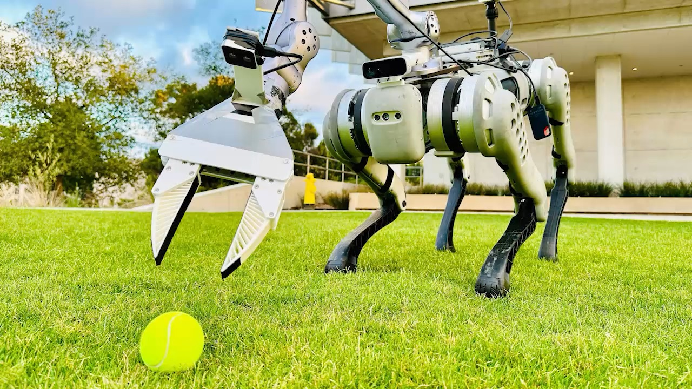
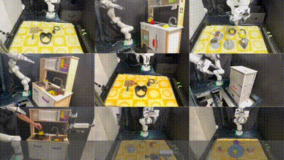
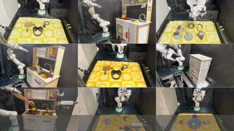
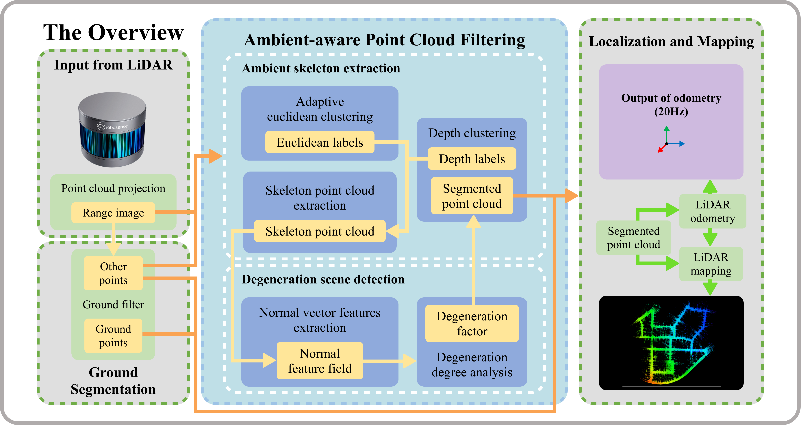
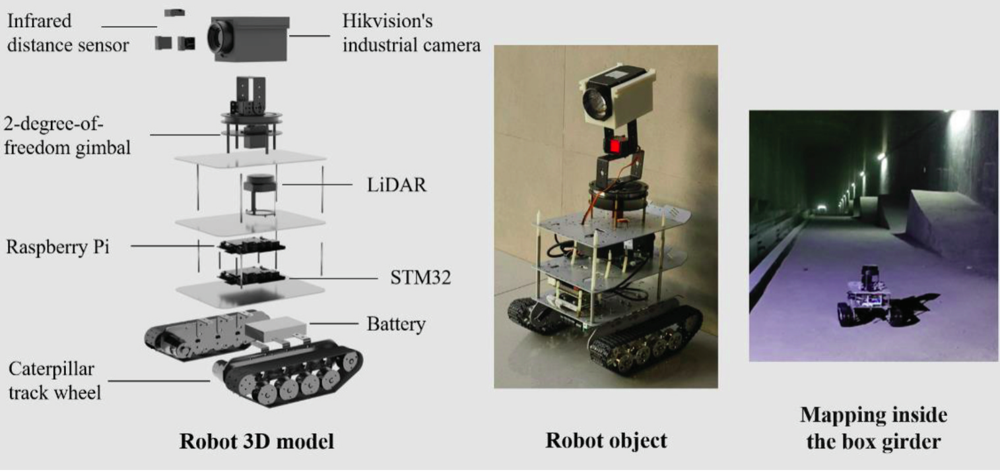

|
Mazeyu Ji 「季马泽宇」 I am a Master student at UC San Diego with Prof. Xiaolong Wang. Before, I received a BEng in Automation from Tongji University in 2019, where I worked in the Tongji RAIL under the guidance of Prof. Qijun Chen and Prof. Chengju Liu. Email / Google Scholar / Twitter / Github |
{kind=link}
ResearchI'm interested in robotics, machine learning and computer vision. |
|

|
WildLMA: Long Horizon Loco-MAnipulation in the Wild
Ri-Zhao Qiu*,Yuchen Song*, Xuanbin Peng*, Sai Aneesh Suryadevara, Ge Yang, Minghuan Liu, Mazeyu Ji, Chengzhe Jia, Ruihan Yang, Xueyan Zou, Xiaolong Wang CoRL, 2024 project website / paper |

|
LMM-3DP: Integrating LMM Planners and 3D Skill Policies for Generalizable Manipulation
Yuelei Li*, Ge Yan*, Annabella Macaluso, Mazeyu Ji, Xueyan Zou, Xiaolong Wang in submission to ICRA, 2025 project page |
|


|
GraspSplats: Efficient Manipulation with 3D Feature Splatting
Mazeyu Ji*, Ri-zhao Qiu*, Xueyan Zou, Xiaolong Wang CoRL, 2024 project website / paper / code |
|

|
Adaptive Denoising-Enhanced LiDAR Odometry for Degeneration Resilience in Diverse Terrains
Mazeyu Ji, Wenbo Shi, Yujie Cui, Chengju Liu, Qijun Chen IEEE Transactions on Instrumentation and Measurement, 2024 paper / IEEE / code |
|

|
A smart robotic system for autonomous inspection of large-scale concrete girder
Yujie Cui, Yue Pan, Dalei Wang, Mazeyu Ji, Sugong Cao Bridge Maintenance, Safety, Management, Digitalization and Sustainability, 2024 project website / paper |
MiscI enjoy playing basketball, watching movies and traveling. |
|
Designed and sourced code based on Jon Barron's website. |